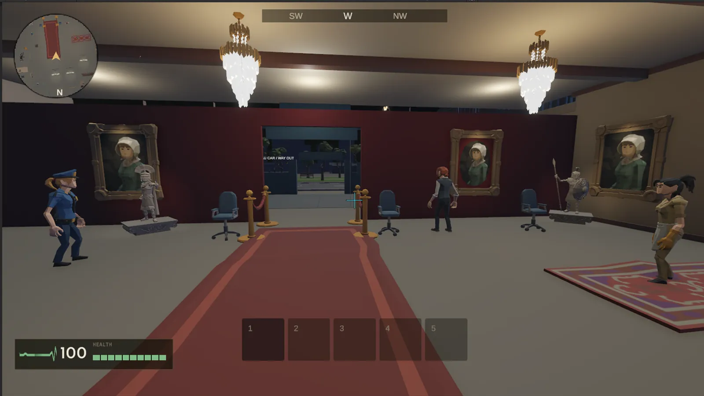
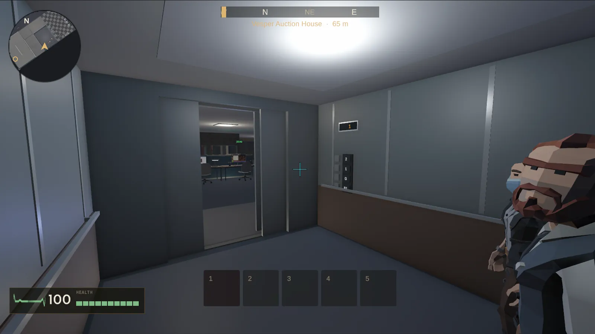
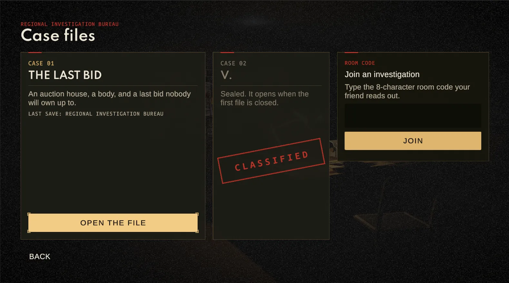

The first file on your desk.
Masandaki ilk dosya.
Locard is built as a series. Each entry is one complete case; the name never changes and the series grows underneath it.
Locard bir seri olarak kurgulanıyor. Her bölüm eksiksiz bir vaka; ad hiç değişmiyor, seri onun altında büyüyor.
The Last Bid
Son Teklif
An auction house, a body, and a last bid nobody will own up to.
Bir müzayede evi, bir ceset ve kimsenin sahiplenmediği son bir teklif.
The case opens in the Bureau, not at the scene: a short walk through the office, the team you have known for years, then the call. From there it is your investigation: the scene, the interviews, the lab, the city.
Vaka olay yerinde değil Büro'da açılır: kısa bir ofis turu, yıllardır tanıdığın ekip, sonra gelen ihbar. Oradan sonrası senin soruşturman: olay yeri, görüşmeler, laboratuvar ve şehir.
The file can close in seven different ways, depending on what you proved, who you pushed, and how you moved in.
Dosya; neyi ispatladığına, kimi sıkıştırdığına ve nasıl müdahale ettiğine göre yedi farklı şekilde kapanabilir.

Seen from the inside.
İçeriden görünüş.
Frames from the current build, taken in the game itself.
Mevcut sürümden, oyunun kendisinde alınmış kareler.


01 / 05Work in progress. Interface and visuals may change before release.Yapım sürüyor. Arayüz ve görseller çıkıştan önce değişebilir.
A statement is not a fact.
İfade, gerçek değildir.
Locard gives you findings. The reasoning stays yours. There is no golden trail to the objective, no evidence glowing across the room, and no colour code that quietly names the killer.
Locard sana bulguyu verir; çıkarım sende kalır. Hedefe giden altın çizgi yok, odanın öbür ucunda parlayan delil yok, katili sessizce ele veren renk kodu yok.
Pick two pieces of paper and string them together. One pair does not survive the comparison. The others can sit on the same board without proving a thing.
İki kâğıt seç ve ipi bağla. Bir çift karşılaştırmaya dayanmıyor. Diğerleri aynı panoda durup hiçbir şeyi ispatlamayabilir.
These two sit side by side and prove nothing together. A board full of facts is not a solved case. Try another pair.
Bu ikisi yan yana duruyor ama birlikte hiçbir şeyi ispatlamıyor. Gerçeklerle dolu bir pano çözülmüş vaka demek değildir. Başka bir çift dene.
The claim does not survive the record. You can put it on the table in the middle of the interview, or hold it back until it costs more. Neither choice is free: pressure closes some doors and opens others.
İddia kaydın karşısında ayakta kalmıyor. Bunu görüşmenin tam ortasında masaya koyabilirsin ya da daha pahalıya patlayacağı ana saklayabilirsin. İkisi de bedelsiz değil: baskı bazı kapıları kapatır, bazılarını açar.
An illustration of the mechanic, not a scene from the case.Mekaniğin gösterimi; vakadan bir sahne değildir.
Where the file can end
Dosya nerede bitebilir
Seven ways for one case to close. Touch a branch to read how.
Tek bir vakanın kapanabileceği yedi yol. Nasıl olduğunu okumak için bir dala dokun.
A decision is never only a closed option: it opens a different event, a different place to hold an interview, an official route, a pursuit. The murder and the person who committed it do not change. What changes is what you can prove, and what it cost you.
Karar hiçbir zaman yalnızca kapanan bir seçenek değildir: başka bir olay, görüşmenin yapılacağı başka bir yer, resmî bir erişim yolu ya da bir takip açar. Cinayet ve onu işleyen kişi değişmez. Değişen şey, neyi ispatlayabildiğin ve bunun sana neye mal olduğudur.
A file that holds
Ayakta kalan dosya
The right person, in custody, with a case that stands on documented records. This is the hardest ending to earn.
Doğru kişi, gözaltında, belgelenmiş kayıtlara dayanan bir dosyayla. Kazanılması en zor son budur.
Right name, weak file
Doğru isim, zayıf dosya
You named the right person, but the file was not strong enough to hold them. Being right and being able to prove it are different things.
Doğru kişiyi andın ama dosya onu tutacak kadar sağlam değildi. Haklı olmak ile ispatlayabilmek aynı şey değildir.
An unjust accusation
Haksız isnat
You named someone, and the record that would have cleared them never reached your file.
Birini suçladın; onu aklayacak kayıt dosyana hiç girmedi.
The contradiction you saw
Görülen çelişki
The proof was on your board. You accused anyway, and the file records that you could have known.
Kanıt panonda duruyordu. Yine de suçladın ve dosya, bilebileceğini kaydediyor.
The one who got away
Kaçan fail
The person you wanted slips out of reach. How you approached the final moment decided whether they could.
Aradığın kişi elinden kayıp gidiyor. Son ana nasıl yaklaştığın, bunun mümkün olup olmadığını belirledi.
A death in the intervention
Ölümle kapanan müdahale
It ends in violence, not in a conviction. The evidence you gathered stays, but the way you moved in is part of the record.
Son bir mahkûmiyetle değil, şiddetle bitiyor. Topladığın deliller yerinde kalıyor ama nasıl müdahale ettiğin kaydın parçası oluyor.
An open file
Açık dosya
No accusation. You close the folder without a name, and the file stays on the desk.
İsnat yok. Dosyayı bir isim yazmadan kapatıyorsun ve dosya masanda kalıyor.
What is in the kit.
Çantanda ne var.
The evidence board
Delil panosu
People, places and objects are filed automatically. The links, like "this person could have been here", are drawn by you. A board full of facts is not a solved case.
Kişi, yer ve nesne kartları panoya kendiliğinden düşer. Bağlantıyı, yani "bu kişi burada bulunmuş olabilir" satırını, sen kurarsın. Gerçeklerle dolu bir pano çözülmüş vaka demek değildir.
Observation and contradiction
Gözlem ve çelişki
Testimony is compared against what you documented. When a statement does not survive the record, you can put the contradiction on the table during the interview itself.
İfade, belgelediğin kayıtla karşılaştırılır. Bir anlatım kayda dayanmıyorsa çelişkiyi görüşmenin tam ortasında masaya koyabilirsin.
Forensics on a queue
Kuyruktaki laboratuvar
Prints, UV, blood documentation, fibre samples, autopsy. Results do not arrive instantly: reports land on your phone or are handed to you in person as the case moves.
Parmak izi, UV, kan izi belgeleme, lif örneği, otopsi. Sonuçlar anında gelmez: soruşturma ilerledikçe telefona düşer ya da yerinde teslim alınır.
Interviews with a cost
Bedeli olan görüşmeler
Choose the topic and the register: empathy, formality or pressure. Present evidence, get it wrong, walk it back. People answer with words and with body language.
Konuyu ve tonu seçersin: empati, resmiyet ya da baskı. Delil sunarsın, yanlış çıkarım yaparsın, geri adım atarsın. Karşındaki hem sözle hem beden diliyle cevap verir.
The city and the car
Şehir ve araç
Meridian is one open city. Drive the team car yourself, follow the GPS line, or go on foot. Pick a partner for each trip, or go alone: every route to the truth stays open on a solo run.
Meridian tek bir açık şehir. Ekip aracını kendin sür, GPS çizgisini izle ya da yürüyerek git. Her yolculuk için bir ortak seç ya da yalnız git: yalnız rotada da gerçeğe giden bütün yollar açık kalır.
Locked rooms
Kilitli odalar
Places keep their own secrets: doors, cabinets and safes that want a code, a key or a second pair of hands. Some puzzles ask for two people; on a solo run, a teammate helps.
Mekânların kendi sırları var: kod, anahtar ya da ikinci bir çift el isteyen kapılar, dolaplar ve kasalar. Bazı bulmacalar iki kişi ister; yalnız oynarken bir ekip arkadaşı yardım eder.
Reconstruction
Yeniden kurgu
When the chain holds, the scene is replayed in 3D silhouettes: your version of the night, built only from what you actually established.
Zincir tuttuğunda sahne 3B silüetlerle yeniden oynatılır: o gecenin senin kurduğun hâli, yalnızca gerçekten ispatladıklarından.
Bring someone to the table.
Masaya birini davet et.
The case is the same whether you walk in alone or with three friends. What changes is who is arguing with you.
Vaka, yalnız girsen de üç arkadaşınla girsen de aynı. Değişen, seninle kimin tartıştığı.
- One to four players.Bir ile dört oyuncu.Invite through Steam, or share an eight character room code with a friend.Steam üzerinden davet et ya da sekiz karakterlik oda kodunu bir arkadaşınla paylaş.
- One shared case.Ortak bir vaka.The board, the evidence and the car are shared. Everyone can examine, document and question.Pano, deliller ve araç ortaktır. Herkes inceleyebilir, belgeleyebilir, soru sorabilir.
- Voice chat is built in.Sesli sohbet hazır.Argue the case out loud, in the car, over the board.Vakayı sesli tartış; araçta, panonun başında.
- Big decisions are a vote.Büyük kararlar oylamayla.The majority wins, and the host breaks a tie.Çoğunluk kazanır, eşitlikte host karar verir.
- Solo is the whole game.Tek başına oyunun tamamı.Every route to the truth stays open on a solo run.Yalnız rotada da gerçeğe giden bütün yollar açık kalır.
What you are actually buying.
Eline tam olarak ne geçiyor.
We would rather tell you this now than let you find it out afterwards.
Bunu sonradan öğrenmen yerine şimdi söylemeyi tercih ediyoruz.
In the first file
İlk dosyada
Case 01 · Early AccessDosya 01 · Erken Erişim- One complete case.Eksiksiz bir vaka. Case 01 plays from the first call to the last decision, and closes in one of seven ways.Dosya 01 ilk ihbardan son karara kadar oynanır ve yedi yoldan biriyle kapanır.
- A lot to look at.İncelenecek çok şey. Ten places to walk into, 18 characters and 64 records to examine. The archive and the lab are reached through the Bureau.Girilecek on mekân, 18 karakter ve incelenecek 64 kayıt. Arşive ve laboratuvara Büro üzerinden ulaşılır.
- Solo or together.Tek başına ya da birlikte. One to four players. The evidence board is shared, but the conclusion still has to be argued between you.Bir ile dört oyuncu. Delil panosu ortaktır, ama sonucu yine kendi aranızda tartışmanız gerekir.
- Turkish and English text.Türkçe ve İngilizce metin. There is no voice acting.Seslendirme yok.
- A serious crime story.Ciddi bir suç öyküsü. The game opens with a content warning screen, and it means it. A few tense scenes put a service weapon in your hand, but this is an investigation game, not a shooter.Oyun bir içerik uyarısı ekranıyla açılır ve bunu ciddiye alır. Birkaç gergin sahnede eline hizmet silahı verilir, ama bu bir soruşturma oyunudur, nişancı oyunu değil.
Not yet
Henüz değil
Said plainlyAçıkça söylüyoruz- Early Access.Erken Erişim. The first file is complete. The files after it are built in the open, with feedback from the people playing. Players who join early get the full game at no extra cost.İlk dosya tamam. Sonraki dosyalar, oynayanların geri bildirimiyle açık açık yapılacak. Erken katılanlar tam sürüme ek ücret ödemeden erişir.
- The next files.Sonraki dosyalar. Case 02 is sealed until Case 01 is closed. We will not rush it to hit a date.Dosya 02, Dosya 01 kapanana kadar mühürlü. Bir tarihi tutturmak için acele etmeyeceğiz.
The Steam page opens in a few days.
Steam sayfası birkaç gün içinde açılıyor.
Locard is registered on Steam and the store page is going live shortly. Until then, the fastest way to hear about it is us.
Locard Steam'de kayıtlı ve mağaza sayfası çok yakında yayına giriyor. O âna kadar duyuruyu en hızlı bizden alırsın.
Add Locard to your wishlist.
Locard'ı istek listene ekle.
A wishlist is the most useful thing you can do for a small studio, and it costs nothing. Steam will tell you the day Case 01 arrives.
İstek listesi, küçük bir stüdyo için yapabileceğin en faydalı şey ve hiçbir bedeli yok. Dosya 01 geldiği gün Steam sana haber verir.